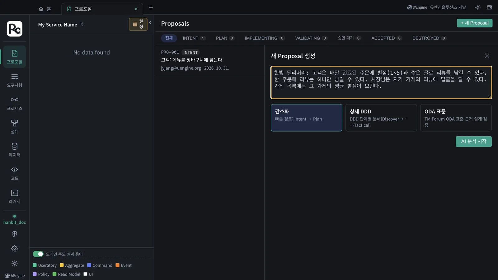
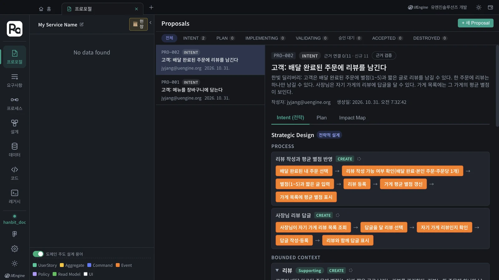
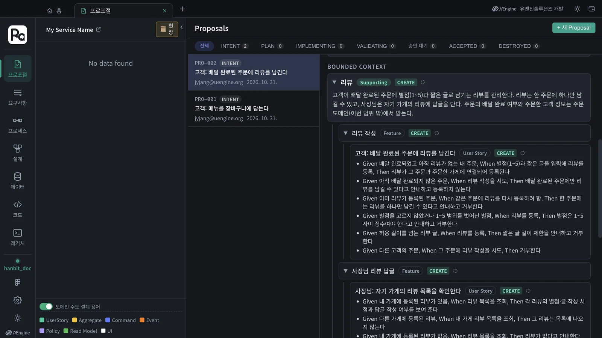

지금까지의 흐름 — 프로포절 · 헌장 · Plan · 구현 · 검증 · 수락 · 변경 영향도 — 를 혼자서 한 번 끝까지 돌립니다. 과제는 한빛 딜리버리에 「리뷰」를 붙이는 것입니다. 전략 설계까지 실제로 돌려 본 예시를 함께 보여 줍니다.
과제#
한빛 딜리버리 프로젝트(hanbit_delivery)에 다음 요구사항을 프로포절로 넣고, 수락까지 가져갑니다.
한빛 딜리버리: 고객은 배달 완료된 주문에 별점(1~5)과 짧은 글로 리뷰를 남길 수 있다. 한 주문에 리뷰는 하나만 남길 수 있다. 사장님은 자기 가게의 리뷰에 답글을 달 수 있다. 가게 목록에는 그 가게의 평균 별점이 보인다.
순서#
- 프로포절 만들기 — 프로포절 탭 › + 새 Proposal에 위 문장을 넣고 AI 분석 시작(3장).
- 전략 설계 확인 — 바운디드 컨텍스트 · 기능 · 사용자 스토리 · 인수 조건을 읽고, 다르면 의도가 다른가요? 피드백 후 재생성(3장).
- Plan — 헌장은 4장에서 정한 것을 그대로 씁니다. Plan 단계로 진행 → Plan 생성 → Plan 확정(5장). 헌장 공백이 나오면 적어 둡니다.
- 구현 — 샌드박스 구현 열기 → 작업 목록 생성 → 구현하기 → Claude Code 셀로 이동(6장).
- 검증과 수락 — 구현 완료 → 검증, 인수 조건 통과를 확인하고 Accept(7장).
- 영향 확인 — 요구사항 · 설계 · 데이터 탭에서 무엇이 새로 생기고 무엇이 바뀌었는지 봅니다(8 · 9장).
예시 — 전략 설계까지 돌려 본 결과#
같은 문장을 연습 프로젝트 hanbit_doc(12장)에 넣어 INTENT까지 돌려 보았습니다. 85초 걸렸고, 명확화 질문 없이 바로 나뉘었습니다.

| 바운디드 컨텍스트 | 분류 | 기능 | 사용자 스토리 |
|---|---|---|---|
| 리뷰 | Supporting | 리뷰 작성 · 사장님 리뷰 답글 | 고객: 배달 완료된 주문에 리뷰를 남긴다 · 사장님: 자기 가게의 리뷰 목록을 확인한다 · 사장님: 자기 가게의 리뷰에 답글을 단다 |
| 가게 | Supporting | 가게 목록 평균 별점 | 고객: 가게 목록에서 가게별 평균 별점을 확인한다 |
프로세스는 「리뷰 작성과 평균 별점 반영」, 「사장님 리뷰 답글」 두 개였습니다.

과제 문장의 규칙이 모두 인수 조건으로 내려왔습니다. 「고객: 배달 완료된 주문에 리뷰를 남긴다」에 붙은 것들입니다.
| 문장의 규칙 | 인수 조건 (Given · When · Then) |
|---|---|
| 배달 완료된 주문에 | 아직 배달 완료되지 않은 주문 · 리뷰 작성 시도 · 배달 완료된 주문에만 남길 수 있다고 안내하고 등록하지 않는다 |
| 한 주문에 하나 | 이미 리뷰가 등록된 주문 · 다시 등록하려 함 · 하나만 남길 수 있다고 안내하고 거부한다 |
| 별점 1~5 | 별점을 고르지 않았거나 범위를 벗어남 · 등록 · 1~5 사이 정수여야 한다고 안내하고 거부한다 |
| (문장에 없던 것) | 다른 고객의 주문 · 리뷰 작성 시도 · 거부한다 |

여러분의 결과는 이와 다릅니다
예시는 수락된 설계가 없는 연습 프로젝트에서 돌린 것이라 「가게」 컨텍스트도 새로 만들었습니다(CREATE). INTENT 스킬에는 「기존 도메인 구성 요소와 일치하면 그 id를 재사용한다」는 규칙이 있어서, 3~7장을 마친 hanbit_delivery 에서는 새 기능이 「주문」 · 「메뉴 관리」 같은 기존 컨텍스트 아래로 들어가고, Plan에서 기존 애그리거트를 고치는 항목(MODIFY)이 나옵니다(9장에서는 Order가 MODIFY · 충돌 가능성 HIGH). 그 차이를 9장의 영향도와 함께 보는 것이 이 과제의 핵심입니다.
스스로 점검하기#
| 점검 | 볼 곳 |
|---|---|
| 리뷰를 따로 된 바운디드 컨텍스트로 둘지, 주문 안에 둘지 — 그 판단의 근거를 말할 수 있다 | 전략 설계 · 헌장 원칙 I(모듈 경계) |
| 「배달 완료된 주문에만」 · 「한 주문에 하나」가 인수 조건과 애그리거트 규칙(불변식)으로 들어갔다 | 전략 설계 · Plan 의 Tactical Design |
| 평균 별점을 어디서 계산하는지(리드모델) 설명할 수 있고, 다른 모듈의 테이블을 직접 읽지 않는다 | Plan 의 아키텍처 결정 · 헌장 원칙 I |
| 검증에서 리뷰 스토리의 인수 조건이 통과했다 | 검증 칸 |
| 기존 주문 · 가게 설계 중 무엇이 바뀌었는지 영향도로 확인했다 | Impact Map · 9장 |
더 해 볼 것#
- 스킬로 팀 규칙 고정 — 「리뷰 글 길이는 숫자로 정한다」 같은 규칙을
robo-proposal-intent에 더해 보고 결과를 비교합니다(10장). - 옛 DB와 맞추기 — 11장의 옛 DB
orders.status에는DELIVERED가 있습니다. 「배달 완료」를 옛 데이터의 어느 값과 대응시킬지 헌장이나 다음 프로포절에 적어 봅니다. - 문서로 시작하기 — 리뷰 · 쿠폰 · 단골 같은 요구사항을 문서 한 편으로 써서 12장처럼 붙여 넣어 봅니다.